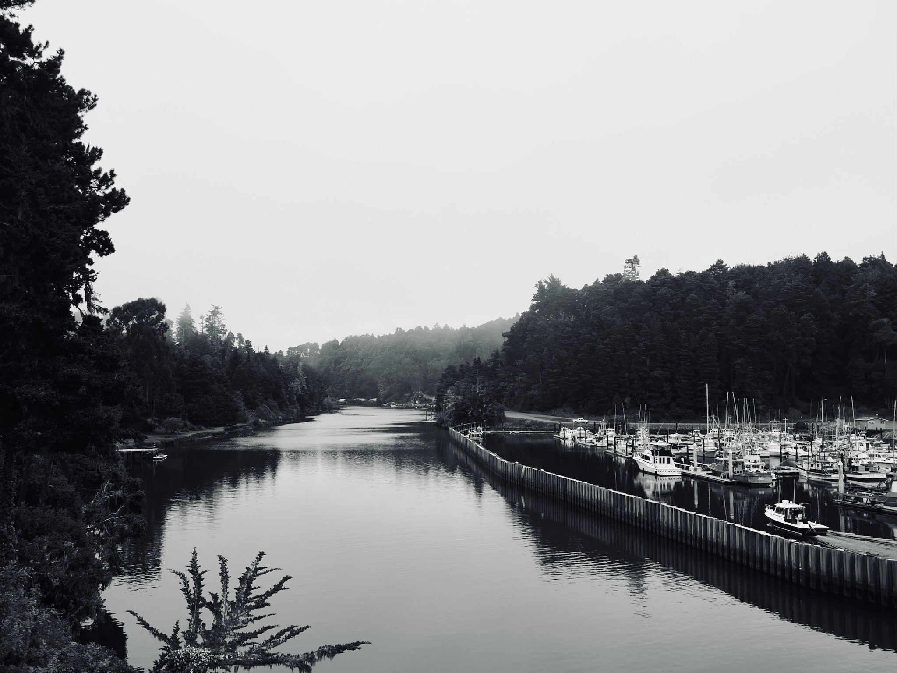
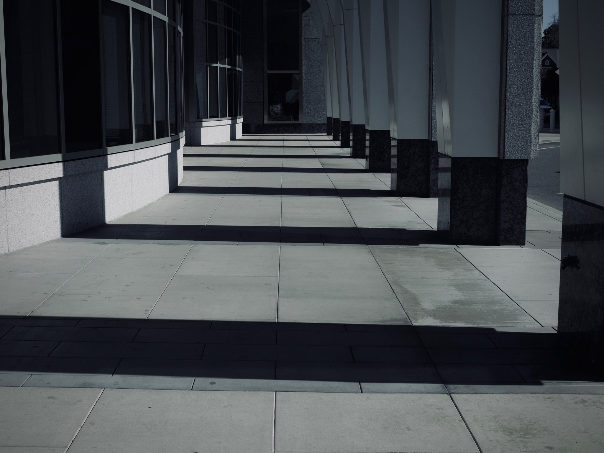
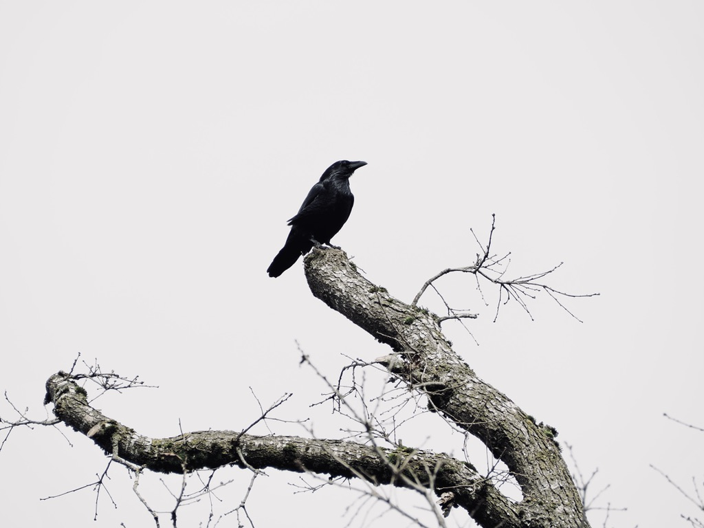
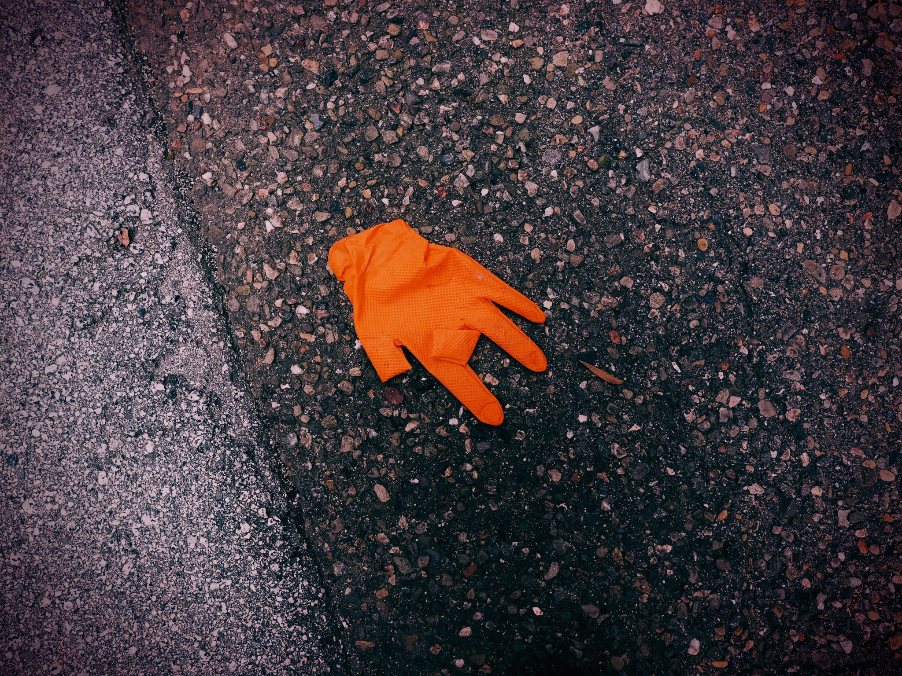

Photography
Soul & Horizon Photography grew out of a long practice of learning to slow down and really see what’s in front of me. I’m drawn to stillness, distance, and quiet observation, and to the way meaning can emerge through space, light, and presence rather than through obvious moments or narratives.
I work slowly and deliberately, often placing subjects within a wider frame so the environment can take precedence. Land, water, wildlife, and built structures are approached with the same restraint, focusing more on composition and atmosphere than on focal points.
The work leans toward subtlety rather than drama. I’m interested in space, repetition, and small shifts, creating images that invite a slower way of looking where meaning forms over time.
Gallery Preview


